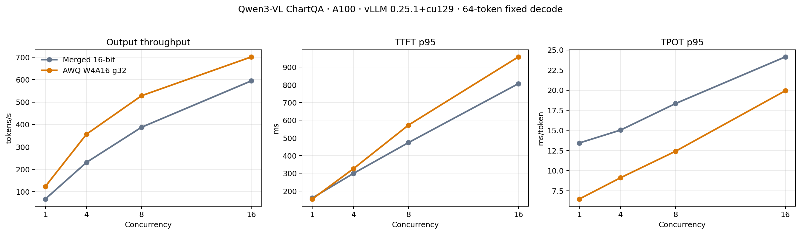
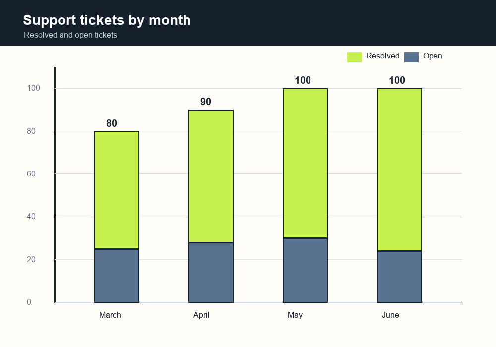

AWQ overalln = 2,500
85.52%
完整 human + augmented test set 的正式 relaxed accuracy。
Visual analysis terminal / 2026
從 15,000 筆 ChartQA QLoRA fine-tuning，到完整 2,500 題品質驗證、AWQ 量化與 A100 vLLM serving benchmark。每個部署決策，都有數據可以追溯。
AWQ 必須在完整 ChartQA test set 上，相對 merged 16-bit 掉分不超過 2 個百分點，才能進入 serving benchmark。
完整 human + augmented test set 的正式 relaxed accuracy。
低於預先定義的 −2 pp 品質門檻；paired bootstrap 95% CI 為 [−1.40, −0.04] pp。
由 merged 16-bit 的 17.53 GB 壓縮至 AWQ W4A16 g32。
同一張 A100-SXM4-40GB、同一組多模態 workload、固定 64-token decode；merged 16-bit 與 AWQ 各測 concurrency 1／4／8／16，8 組全部 64/64 成功。

訓練、評估、量化與 serving 各自隔離，產物透過 pinned revision 銜接，避免把環境差異誤認為模型改善。
15,000 筆 train；human／augmented 分層保留。
Qwen3-VL-8B · rank 16 · 1 epoch · A100。
2,500 題 relaxed accuracy 與不含內容的逐題正確性證據。
group size 32；vision tower 與 lm_head 保持原精度。
快取隔離、獨立 server、固定 workload 與 validity gate。
Q4_K_M text + Q8_0 mmproj；llama.cpp CPU smoke PASS。

這張堆疊長條圖由本 repository 的 deterministic generator 產生，用來展示算術型圖表問答輸入，不包含 ChartQA 影像、題目、標籤或模型輸出。
模型完整品質結論來自 2,500 題 aggregate metrics 與內容無關的 per-item correctness evidence；這張圖只是可安全公開的 UI 範例，不冒充額外 benchmark。
模型、量化權重、完整評估與 benchmark 都保存在 Hugging Face Hub；不是只有一張結果截圖。
QLoRA 訓練輸出與 PEFT 重用。
↗ 16品質參考與 full-precision baseline。
↗ W4正式 accuracy 與 A100 serving 產物。
↗ GG5.03 GB text model + 752 MB mmproj。
↗ QA2,500 題 aggregate metrics 與不含原始內容的逐題正確性證據。
↗ B結果、workload manifest、圖表與 checkpoints。
↗LIVE INFERENCE / COLAB A100
開啟 notebook 後選擇 A100 runtime，確認 Colab Secret 已設定 `HF_TOKEN`，再按「全部執行」。最後一格會產生暫時的 Gradio 分享網址。